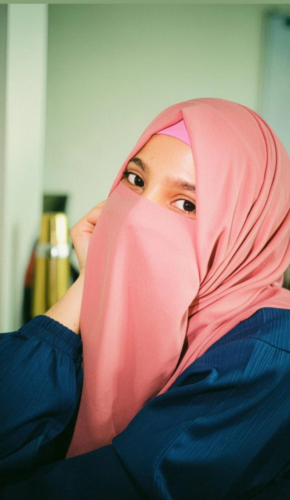

A passionate developer who turns ideas into elegant digital solutions

I am a passionate Full Stack Web Developer with hands-on experience in building responsive, user-friendly, and database-driven web applications. I enjoy transforming ideas into clean, modern, and efficient digital solutions.
My technical experience includes HTML, CSS, Bootstrap, JavaScript, Angular, React, PHP, MySQL, SQL Server, MongoDB, JSON, C#, and ASP.NET MVC.
I continuously improve my skills through practical projects and by learning modern technologies. My goal is to become a highly skilled software developer capable of building scalable, secure, and visually engaging web applications.
From learning the basics to building full-stack applications
Mastered HTML, CSS, Bootstrap, JavaScript, and Angular. Built responsive, interactive, and modern user interfaces with complete frontend proficiency.
Learned PHP, MySQL, SQL Server, and JSON. Started building dynamic database-driven applications with complete CRUD operations and data management.
Mastered C#, ASP.NET MVC, and full-stack development. Built complete enterprise-level web applications with secure architecture, authentication, and scalable design.
Writing readable, maintainable, and efficient code that follows best practices.
Creating user-centered designs that are both beautiful and functional.
Always exploring new technologies and improving my skills.
Working with others to create better solutions and share knowledge.
Become an expert in both frontend and backend technologies.
Learn cloud platforms and DevOps practices for scalable applications.
Contribute to open source projects and give back to the community.